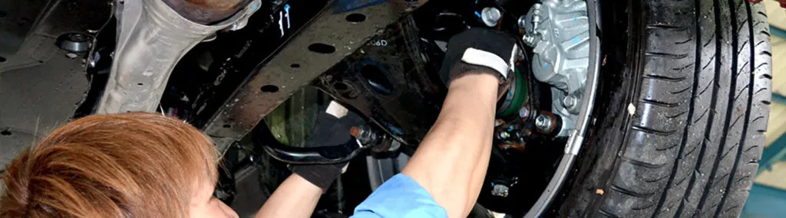

国指定 / 認証工場東北陸運局 認証工場 6522（仙台陸運局認証番号 仙4-6522）
軽自動車から大型自動車まで車検整備、一般整備いたします。
POINT 01
過剰整備を無くす
過去の整備記録を管理して、部品の交換や修理・調整など適切な整備を提案します。必要な整備を、必要なタイミングで。お客様の愛車とお財布にやさしい整備を心がけています。


軽自動車から大型自動車まで車検整備、一般整備いたします。
POINT 01
過去の整備記録を管理して、部品の交換や修理・調整など適切な整備を提案します。必要な整備を、必要なタイミングで。お客様の愛車とお財布にやさしい整備を心がけています。
| ブレーキオイル | 初回3年、以降2年 |
|---|---|
| トランスミッション | メーカー推奨の交換距離または必要時（車検・点検時）に確認します。 |
| デファレンシャルオイル エアークリーナーエレメント | 必要時（車検・点検時に）確認します。 |
| タイミングベルト | 10,000km毎 |
| 点火プラグ | 白金プラグ 100,000km 通常プラグ 必要時20,000〜30,000km |
| エンジンオイル | 4,000km又は半年毎 |
| オイルフィルター | エンジンオイル交換時2回に1回 |
| 冷却水ロングライフクーラント | 目安50,000kmまたは必要時（車検・点検時）に確認します。 |
| ベルト類 | 50,000km目安又は必要時 |
| マスターシリンダを ホイルシリンダーのゴム部分に直す | 2年〜4年毎 |
| バッテリー | 必要時 |
| ブレーキライト ブレーキライニング | 5mm以下（年間使用距離にて推奨） 3mm以下（年間使用距離にて推奨） |
| タイヤ | スリップサインが出た時、又は表面劣化時（4〜5年位） |
EQUIPMENT
最新のシステム診断機を完備。電子制御化が進む現在の自動車も、正確に状態を診断し、的確な整備につなげます。
各種ケミカル剤を用意して、愛車のコンディションをサポートします。


車検・整備のご相談はお気軽に
受付時間 9:00 - 18:00 ／ 日・祝日除く